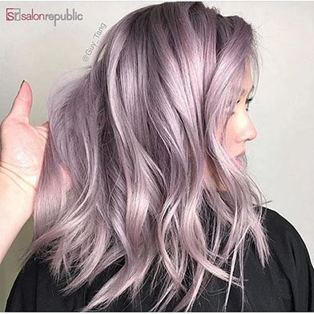
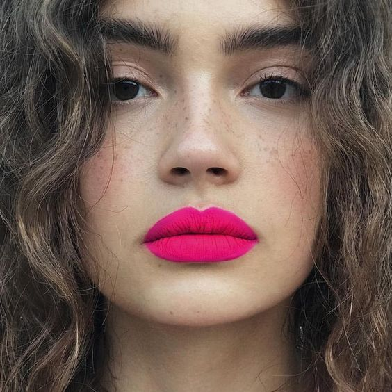

2016 was all about smokey lilac hair, but for 2019 we will see a return to straight up lilac dye. With Pinterest searches up +1077%, it's time to book that hairdresser appointment to get involved with the biggest beauty trend of 2019, or just leave your purple shampoo on that little bit longer...
If you haven't managed to kick your gel nail addiction, prepare to become obsessed with powder dipping, or SNS as it's otherwise known. By using powder instead of gel, your manicure will last as long as a month, without any of the damage of gel nails.
If you've ever had a lash lift, you will know how it can turn your lashes from zero to hero, in an hour and 45 minutes. But if you don't have the time, or more importantly the money, you're not alone. Searches for 'natural lash lifts' including hacks like grapeseed oil and aloe vera are up +52%.
When it comes to fringes, we're all commitment phobes, but it's time to get serious in 2019. Searches for 'cropped bangs' are up +51%, so it's time to channel your inner Bella Hadid and get those long wanted baby bangs.
Matte addicts look away now, because gloss is back and it's more sticky than ever. Not only will we be ditching our matte liquid lipsticks for lip gloss, but we'll also be extending the shininess to our skin, eyelids and wherever else we want our hair to get stuck. With searches for 'glossy makeup' up +89%.
Thanks to Glossier, 2018 saw the minimal makeup movement seriously challenge the heavy Instagram look. For 2019 prepare to compromise and pair your barely there base with a bold lip, as 'standout lip colour' searches increased by +467%.
